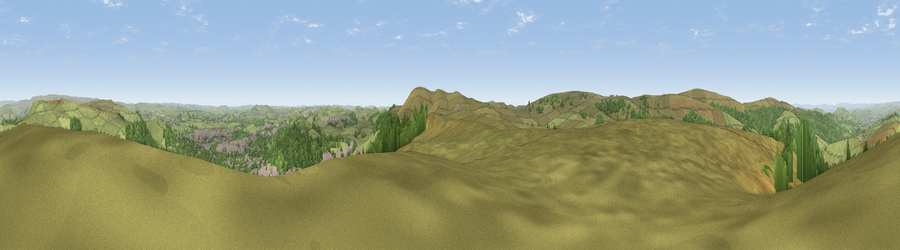

Burbage Edge
#8677 in England · top 9% of its area beats it · near BurbageThe view, rendered

A 360° render of this exact spot computed from the terrain model, tree cover and land cover — summer colours, afternoon light, calibrated against photographs of famous viewpoints. Real trees, hedges and buildings will differ in detail.
The panorama
Grey silhouette: terrain skyline in each direction (720 bearings, Earth curvature and refraction included). Dashed green: skyline with trees (+15 m) and buildings (+8 m) as obstacles. Blue strip: how far the ground is visible on each bearing.
Where the view opens
Wedge length = distance to the farthest visible ground on that bearing (vegetation-aware). Rings at 10, 25 and 50 km.
What fills the view
73% grassland · 21% woodland · 6% built-up
Angular shares of the visible panorama (visual magnitude), not map area. Landscape diversity 0.31 (0–1 Shannon).
Key numbers
More beautiful places nearby
The staircase of upgrades: each row has a higher view potential than everything closer. Driving times are estimates from straight-line distance, calibrated against real road routing — check an actual route before setting out.
| Place | Direction | Drive | Score |
|---|---|---|---|
| Viewpoint near Burbage | SSE · 3 km | ~7 min | 69.2 |
| Shining Tor | W · 4 km | ~8 min | 72.7 |
| Viewpoint near Meerbrook | SSW · 10 km | ~19 min | 73.5 |
| Viewpoint near Timbersbrook | SW · 16 km | ~28 min | 74.4 |
| Viewpoint near Mow Cop | SW · 23 km | ~38 min | 78.9 |
| Viewpoint near Mow Cop | SW · 23 km | ~38 min | 80.2 |
| White Brow | NW · 54 km | ~75 min | 82.9 |
| Viewpoint near Little Wenlock | SSW · 76 km | ~99 min | 84.2 |
53.25590, -1.95729 · source: osm peak · position refined by local search. Computed location — check access rights before visiting.